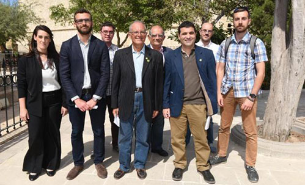

Notícias Nacionais de Malta
quinta-feira, 25 de maio de 2017, 17 : 47
AD quer a descriminalização de todas as drogas para que os usuários possam ser ajudados, não perseguidos
Alternattiva Demokratika disse hoje que todas as drogas devem ser descriminalizadas no que diz respeito aos usuários, enquanto a maconha deve ser legalizada.
O porta-voz do partido, Ralph Cassar, disse em entrevista coletiva que, em vez de perseguir os usuários de drogas, o país deve ajudá-los.
"Queremos uma política humanitaria", disse ele.
Ele insistiu que os usuários de drogas precisavam de ajuda médica e social através de uma estrutura que inclua trabalhadores comunitários e outros assistentes sociais.
Ele observou que a Comissão Global da ONU sobre Política de Drogas havia proposto a descriminalização de todas as drogas para uso pessoal. Tal modelo foi adotado com sucesso em Portugal.